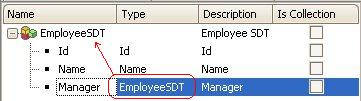

This method allows loading a null value in an attribute, and enables independence from the Generate null for nullvalue() property used in assigning a null value attribute.
attribute.SetNull()
Objects: Procedure, Transaction, Web Panel
Generators:
.NET,
Java, Ruby (up to GeneXus X Evolution 3), RPG, Visual FoxPro (up to GeneXus X Evolution 3), Cobol
If the attribute allows nulls in the table, using this method can force the attribute to take the null value.
The SetNull method is applied as follows:
If you define an 'Employee' SDT with a 'Manager' member of the type 'Employee', to stop recursion you have to program &Person.Manager.SetNull().
Before referring to the manager, ask if &Employee.Manager.Isnull(). If you do not program this line, the Manager is automatically initiated.

&Employee.Id = 99 &Employee.Name = 'Mary Shelley' &Employee.Manager.Id = 69 &Employee.Manager.Name = 'Er' &Employee.Manager.Manager.SetNull() &Employee.ToXML()
Programming is the same as in previous versions, plus IsNull() and SetNull() handling.
The result is the following:
<Employee> </Employee>
OwnerCel.SetNull() if OwnerName.IsEmpty();
If Y.IsNull() X.SetNull() Else X = Y EndIf
| Backlinks | |
| Generate null for nullvalue() property | Methods and Functions matching |
| Nullvalue function |